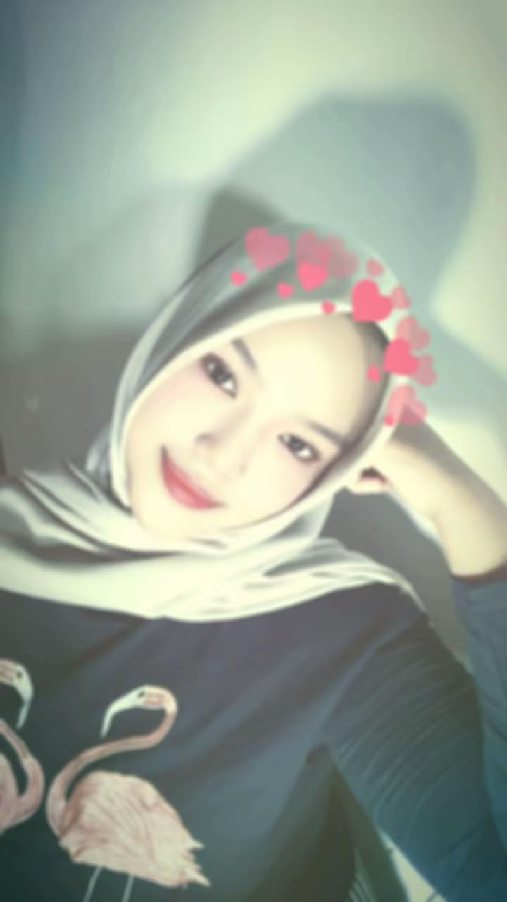
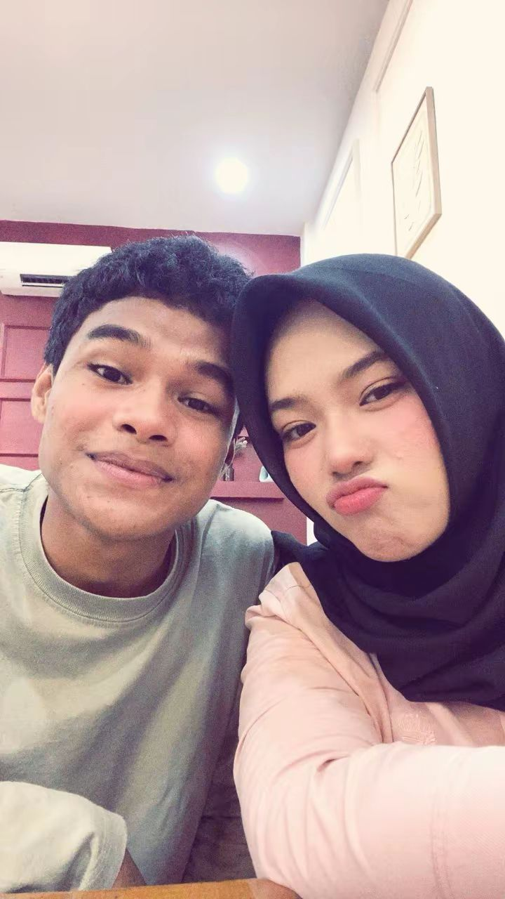
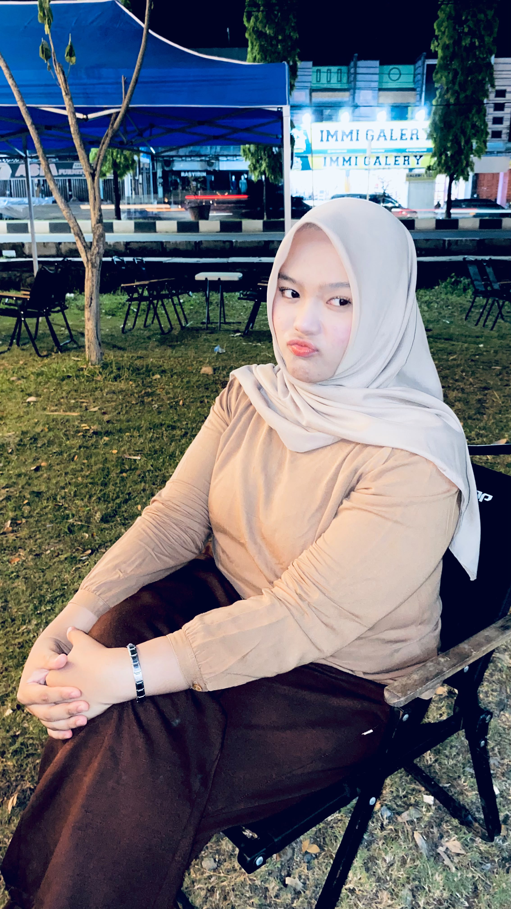
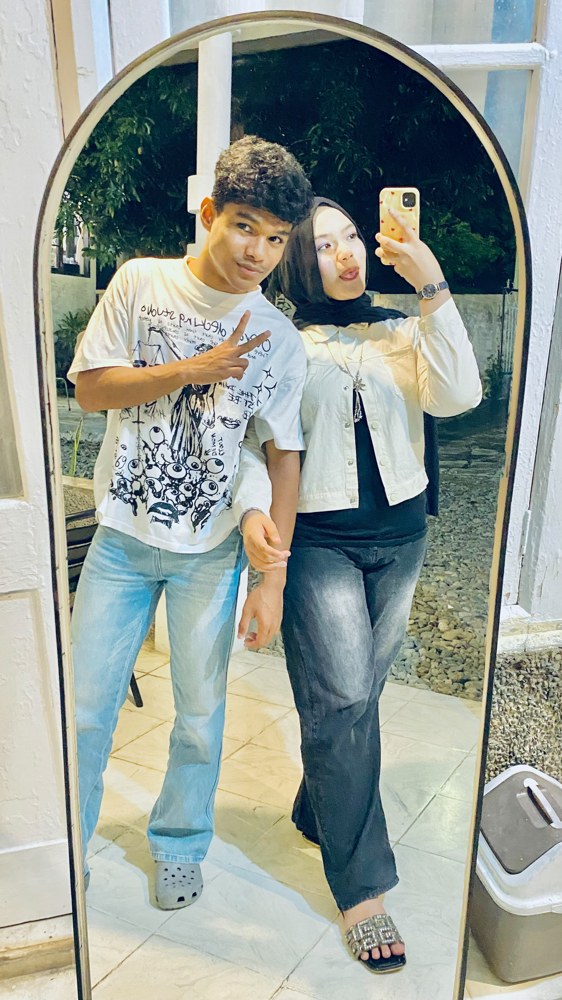

Maaf ya, sayang,
aku telat.
Luna, tanggal 16 Oktober kemarin hari spesial kamu, dan aku lupa ngucapin. Bukan karena kamu nggak penting. Justru kamu orang yang paling pengen aku jadiin yang pertama, dan aku malah kelewat. Aku nyesel banget.
Aku nggak mau bikin alasan. Aku cuma mau bilang maaf yang tulus karena udah bikin kamu nunggu di hari yang harusnya paling kamu rayain. Kalau kemarin kamu sempet sedih atau kecewa, itu salah aku, dan aku ngerti.
Makanya aku bikin ini. Ucapan ini telat, tapi isinya nggak telat sedikit pun. Aku sayang kamu, dan hari ini aku mau ngerayain kamu dengan benar.
Honestly, sayang, aku ngerasa bersalah banget. Di hari kamu lahir, harusnya aku yang jadi orang pertama yang ngucapin, bukan yang ketinggalan. Aku tau chat kamu pasti udah penuh ucapan dari orang lain, tapi ucapan dari aku itu beda buat aku, dan aku malah kelewat.
Aku nggak mau kamu mikir ini karena kamu nggak berarti. It’s the exact opposite. Kamu terlalu berarti sampai aku pengen ngasih yang terbaik, dan ternyata cara terbaiknya bukan nunda, tapi hadir tepat waktu. That’s a lesson I’ll never forget.
Jadi tolong baca ini pelan-pelan ya. Aku udah siapin semuanya buat kamu dari awal sampai akhir: ada cerita kita, ada alasan kenapa kamu pantas dirayain, ada doa-doa kecil buat kamu. Semoga ini bisa sedikit ngegantiin hari yang kemarin aku lewatin.
Happy Birthday,
Luna.
Tujuh belas tahun. Semoga umur baru ini ngebawa kamu ke hal-hal baik: tawa yang lebih sering, mimpi yang pelan-pelan jadi nyata, dan orang-orang yang tulus sayang sama kamu.
Makasih udah jadi kamu, yang bikin hari-hariku lebih berwarna. Aku bangga banget bisa nemenin kamu di umur yang spesial ini.
Seventeen itu angka yang spesial, Luna. It’s that age where everything feels new: mimpi makin gede, langkah makin berani, dan kamu makin jadi versi terbaik dari dirimu. Aku seneng banget bisa liat kamu tumbuh kayak gini.
Aku nggak minta banyak-banyak di hari ini. Aku cuma pengen kamu tau kalau kamu itu worth it buat semua hal baik. Dan aku harap tahun ini bawa lebih banyak happiness buat kamu. Every time aku liat kamu senyum, rasanya pengen banget bilang thank you for being in my life.
Happy Birthday, Happy Sweet Seventeen, sayang. Maaf telat, tapi sayangku nggak pernah telat. 🤍
Cerita Kita
Awal Mula Kita
Awalnya cuma kenal biasa, nggak ada yang nyangka bakal jadi sespesial ini. Tapi somehow, dari situ semuanya pelan-pelan berubah, dan kamu jadi bagian penting di hidup aku.
Saat Aku Sadar Kamu Beda
Ada satu titik di mana aku sadar, ada yang beda dari kamu. Cara kamu ngomong, cara kamu ketawa, bahkan hal kecil yang kamu lakuin. Dan aku mulai nggak bisa berhenti mikirin kamu.
Momen Yang Nguji Kita
Kita nggak selalu mulus, sayang. Ada salah paham, ada aku yang salah (termasuk kemarin). Tapi setiap kali, kamu tetep di sini, dan itu yang bikin aku makin sayang.
Sampai Hari Ini
Dari dulu sampai sekarang, I’m so grateful semua cerita ini ada kamu. Every chapter bareng kamu selalu jadi favorit aku, and I can’t wait for the next ones.
Tentang kamu
Kamu selalu ada
Di hari senang maupun capek, kamu selalu ada tanpa aku minta.
Kamu bikin aku tenang
Di dekat kamu, aku ngerasa nggak perlu jadi siapa-siapa selain diri sendiri.
Kamu cuma satu
Nggak ada yang kayak kamu, dan aku beruntung banget bisa kenal kamu.
Kamu bikin hariku berwarna
Hal-hal kecil dari kamu bisa bikin mood aku langsung bagus. Kamu nggak sadar, tapi kamu sepengaruh itu.
Kamu selalu support aku
Kamu percaya sama aku bahkan pas aku sendiri ragu. Thank you for that, sayang.
Kamu bikin aku ketawa
Tingkah dan celotehanmu itu hiburan favoritku, honestly. Hari-hariku jauh lebih seru karena ada kamu.
Taman Harapan
Foto-foto kamu




Sekali lagi, maaf ya sayang,
dan happy birthday,
selamat sweet seventeen.
dengan sayang, selalu ♡